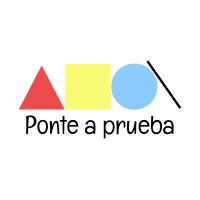

Bienvenido a la evaluación del tema 1
UNAD
Ingeniería de sistemas
Diseño de sitios web
Inicio
Repasos
Tema 1
Tema 2
Evaluaciones
Tema 1
Tema 2
Autor
Test creado con GoConqr por carlos alfonso pinzon castillo